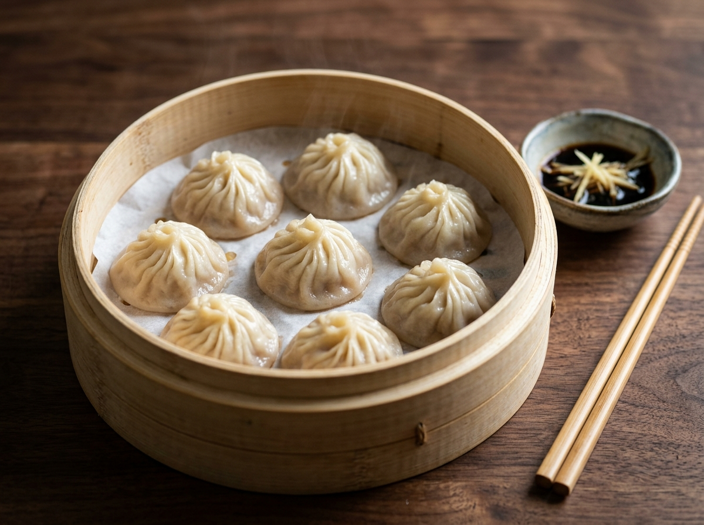
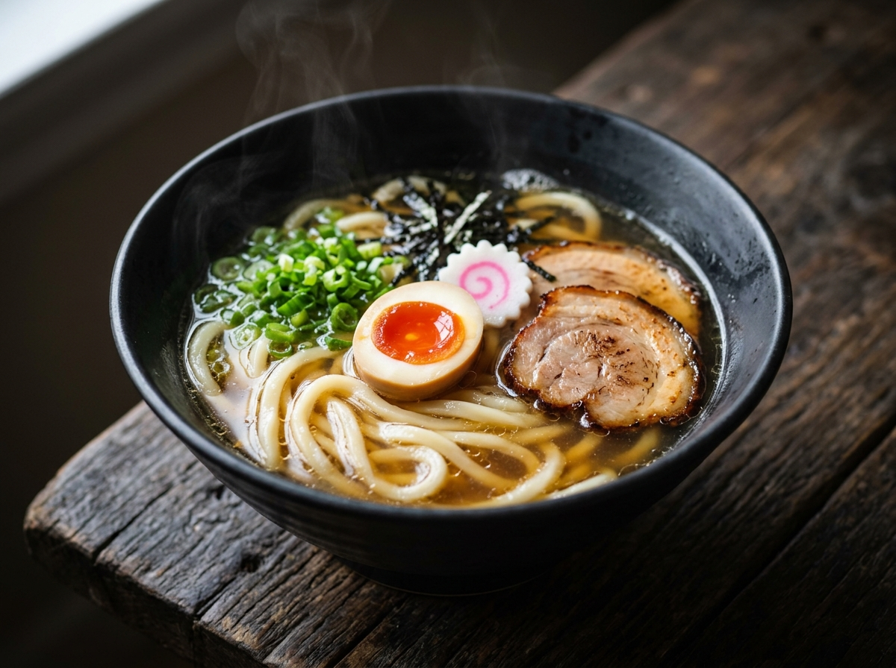
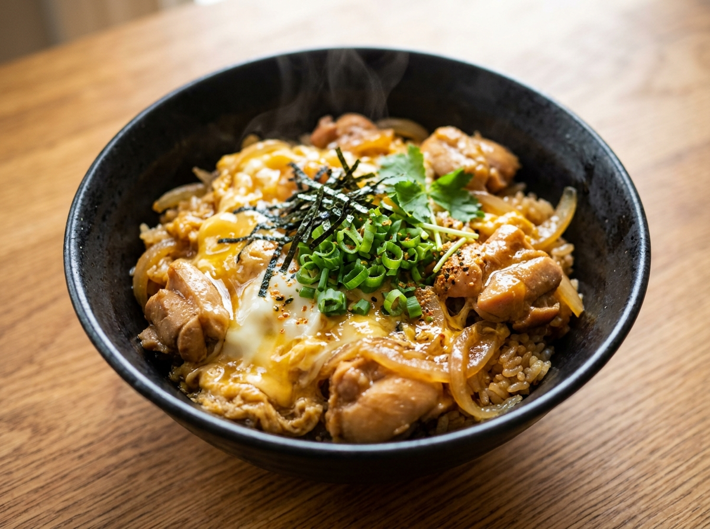

隱身於台東市安慶街，專注手工小籠湯包、熬煮柴魚昆布湯頭、現炒現做經典丼飯與拉麵。每一道料理，皆乘載職人手作的堅持與真誠。

現點現蒸，透光薄皮包裹鮮甜肉汁，佐以現切薑絲與烏醋，入口溫潤爆汁。

北海道昆布與日式柴魚慢熬清冽高湯，搭配彈牙讚岐烏龍麵，清爽甘甜回味無窮。

高溫炙燒帶出牛五花油脂焦香，搭配溫泉半熟蛋、胡麻綠花椰與特製泡菜，滿足飽足。
食材每日新鮮備料・現點現做請耐心等候
均附溫泉半熟蛋、特製泡菜、胡麻綠花椰
可選讚岐烏龍麵 / 手工拉麵